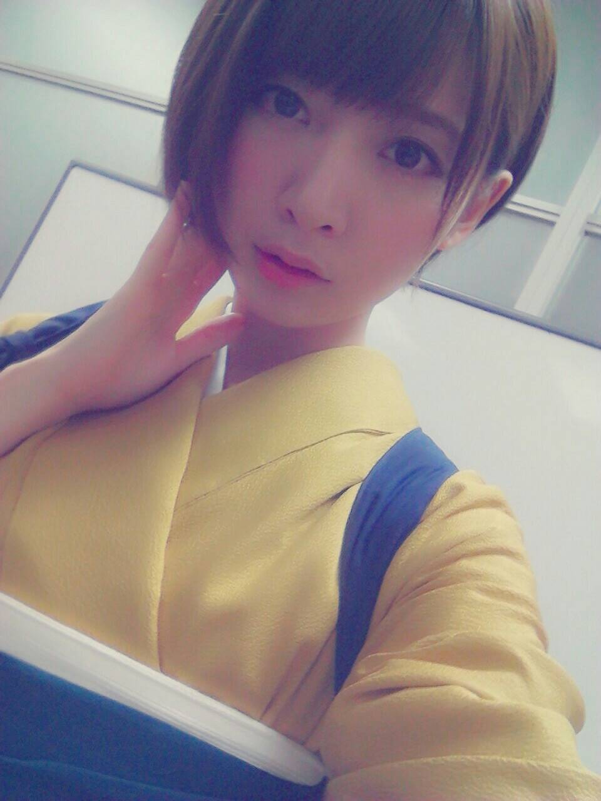

昨日袴着た((o(^-^)o))

好きな色選べたらしいんだけど
私決められてると思ってゆったり着替え場所に向かったら
残った色これくらいしかなかった((o(^-^)o))
黄色と緑で普段の衣装と同じ感じになってしまった、安定感((o(^-^)o))
そして今日は乃木のの収録参加してきたヽ(≧▽≦)/
わたしのだいすきなラジオヽ(≧▽≦)/
中高生のときは
SOL→ジェーットストリーーム...ルールールルルルールー→ラジアン
って感じだったヽ(≧▽≦)/
ラジオやりたいヽ(≧▽≦)/
でもあんまり呼ばれないヽ(≧▽≦)/
理由は分かってるよ
あんまり喋らないからヽ(≧▽≦)/
けど１人だと割と喋るんだよヽ(≧▽≦)/
家で１人の時めっちゃ喋ってるもんヽ(≧▽≦)/
だから最近よく家に川後ひなを召喚してるよヽ(≧▽≦)/
かなり年離れてるけど関係なく仲良くしてもらってます
ひなちゃんは中身と年齢がどうしてこうなったレベルで伴ってない。大人すぎるよ...笑
まいまいともご飯に行きました。
延長戦を近々開きます。
今年の秋は音楽の秋にしたくて、
色んな人のライブに行きたいなーと思ってる((o(^^)o))
夏が終わってしまったことが悲しくて悲しくて寝込む...
でも服はこの季節からのものが好きだから買い物が楽しい季節でもある
今日は衣替えをします